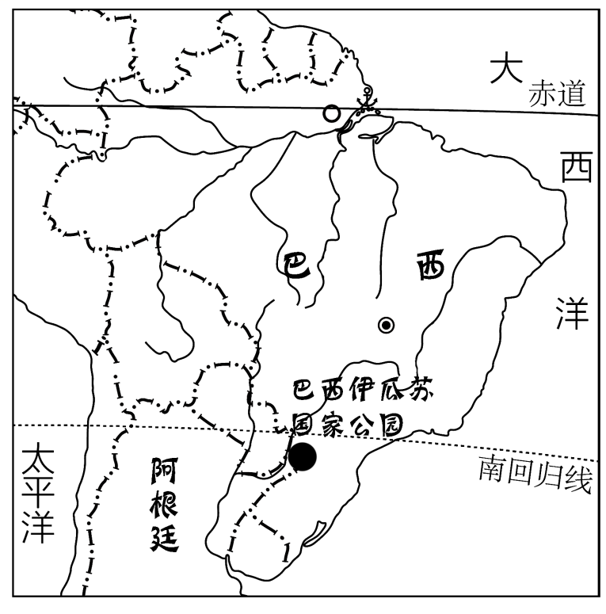
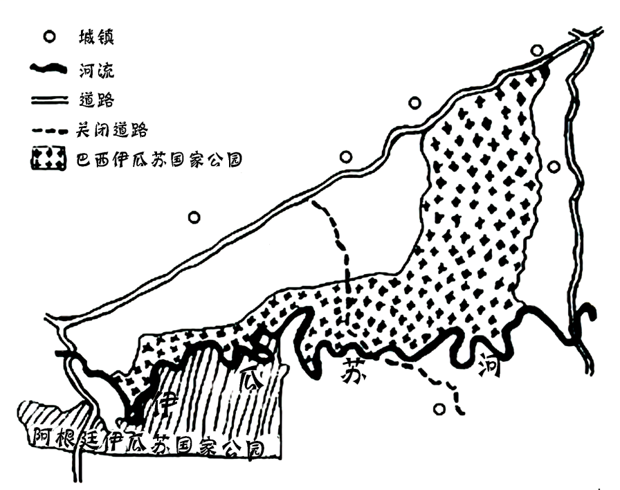

2023年北京中考地理 第21题
巴西伊瓜苏国家公园和阿根廷伊瓜苏国家公园内动植物种类丰富，分别被列入《世界遗产名录》。因当地居民启用原本关闭的道路，1999年巴西伊瓜苏国家公园面临从名录中被删除的危险，2001年该道路重新关闭。图为巴西伊瓜苏国家公园手绘图。读图，完成下面小题。


21. 重新关闭穿越国家公园的道路，可以（ ）
①保护动物的迁徙通道②促进巴西发展边境贸易
③减少盗伐与盗猎现象④改善动植物的生存环境
A. ①②③B. ①②④C. ①③④D. ②③④